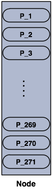
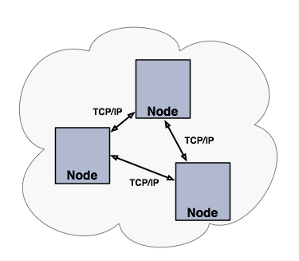
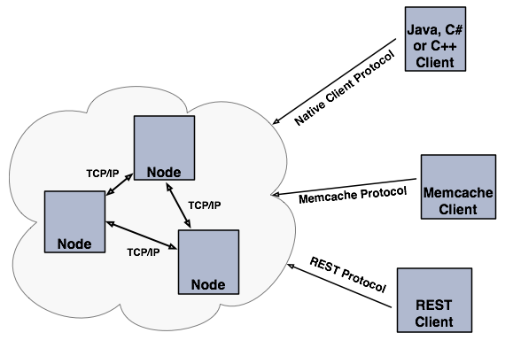

Getting Started
Hazelcast Overview
Hazelcast is an open source In-Memory Data Grid (IMDG). As such it provides elastically scalable distributed In-Memory computing, widely recognized as the fastest and most scalable approach to application performance, and Hazelcast does so in open source. More importantly it makes distributed computing simple by offering distributed implementations of developer friendly interfaces from Java such as Map, Queue, ExecutorService, Lock, JCache and many more. For example, the Map interface provides an In-Memory Key Value store which confers many of the advantages of NoSQL in terms of developer friendliness and developer productivity.
In addition to distributing data In-Memory, Hazelcast provides a convenient set of APIs to access the CPUs in your cluster for maximum processing speed. Hazelcast is designed to be lightweight and easy to use. Since Hazelcast is delivered as a compact library (JAR) and has no external dependencies other than Java, it is easily pluggable into your software solution to provide distributed data structures and distributed computing utilities.
Hazelcast is highly scalable and available. Distributed applications can use Hazelcast for distributed caching, synchronization, clustering, processing, pub/sub messaging, etc. Hazelcast is implemented in Java and has clients for Java, C/C++, .NET as well as REST. Hazelcast can also speak memcache protocol. It also plugs in to Hibernate and can easily be used with any existing database system.
If you are looking for In-Memory speed, elastic scalability and the developer friendliness of NoSQL, Hazelcast is a great choice for you.
Hazelcast is simple
Hazelcast is written in Java with no other dependencies. It exposes the same API from the familiar Java util package. Just add hazelcast.jar to your classpath, enjoy JVMs clustering in less than a minute and start building scalable applications.
Hazelcast is Peer-to-Peer
Unlike many NoSQL solutions, Hazelcast is peer-to-peer. There is no master and slave; there is no single point of failure. All nodes store equal amount of data and do equal amount of processing. Hazelcast can be embedded to your existing application or used in client and server mode where your application is client to the Hazelcast nodes.
Hazelcast is scalable
Hazelcast is designed to scale up to hundreds and thousands of nodes. Simply add new nodes and they will automatically discover the cluster and will linearly increase both memory and processing capacity. The nodes maintain a TCP connection between each other and all communication is performed through this layer.
Hazelcast is fast
Hazelcast stores everything in-memory. It is designed to perform very fast reads and updates.
Hazelcast is redundant
Hazelcast keeps the backup of each data entry on multiple nodes. On a node failure, the data is restored from the backup and cluster will continue to operate without a downtime.
Sharding in Hazelcast
Hazelcast shards are called Partitions. By default, Hazelcast has 271 partitions. Given a key; we serialize, hash and mode it with the number of partitions to find the partition it belongs to. The partitions themselves are distributed equally among the members of the cluster. Hazelcast also creates the backups of partitions and also distributes them among nodes for redundancy.
Partitions in a 1 node Hazelcast cluster.

Partitions in a 2 node cluster.

The blacks are primary partitions and reds are backups. In the above illustration, first node has 135 primary partitions (black) and each of these partitions are backed up in the second node (red). At the same time, first node has the backup partitions of second node's primary partitions.
As you add more nodes, Hazelcast will move one by one some of the primary and backup partitions to new nodes to make all nodes equal and redundant. Only minimum amount of partitions will be moved to scale out Hazelcast.

Hazelcast Topology
If you have an application whose main focal point is asynchronous or high performance computing and lots of task executions, then embedded deployment is the most useful. In this type, nodes include both the application and data, see the below illustration.

You can have a cluster of server nodes that can be independently created and scaled. Your clients communicate with these server nodes to reach to the data on them. Hazelcast provides native clients (Java, .NET and C++), Memcache clients and REST clients. See the below illustration.
